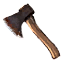

Элодея
Предметы / С заданий
Открыть в интерактивной вики →
| Вес | 25 |
|---|---|
| Цена | 150 |
Описание
Встречается очень редко в некоторых замерзших озерах. Является полностью подводным растением. У нее зеленые и темно-зеленые листья, а побеги могут достигать длины мужской руки. Требуется для создания  Бычье любовное зелье. Для добычи потребуются
Бычье любовное зелье. Для добычи потребуются  Багор и
Багор и
Бычье любовное зелье. Для добычи потребуются Багор и 
Секира| Очень редко встречается в некоторых замёрзших озёрах. Полностью подводное растение с зелёными и тёмно-зелёными листьями, стебли могут достигать длины мужской руки. |
Где найти
- Замерзшее Озеро — путь: Беирн → Замерзшее Озеро
Применение
|
Как добыть
| Мочарку можно собрать только во время активного Ежедневное задание Бычок Стаськи. Для сбора мочарки нужны инструменты (Секира и Багор), покупаем их у Верштейна за 10 000 золота. Мочарку добываем на Замерзшем озере из проруби перед входом в пещеры Подо льдом. Добыча в локации:Замерзшее озеро (113, 56)  |